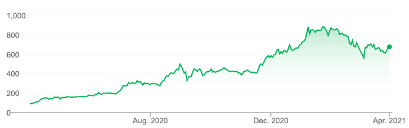
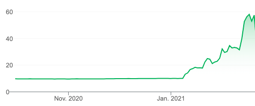

Investing
CJ Dalglish and Bello Chaibou
Friday, April 9th, 2021
Investing as a minor
Have you seen any news about kids making thousands of dollars by simply investing in a business, and
how people have made over 6x their money worth in 1 year of Tesla? Have you ever thought “How can I make a lot
of money by doing the least amount of effort?”. Well, investing is a great way to make that money that you have
wanted whether it is used to buy your first car, or if it is to buy the newest thing that everyone is talking
about. This website will teach you the basics of investing to hopefully get you more interested in
investing.

What is investing
In simple terms investing is the act of buying a share of a company, and letting them share grow
with you, or in a bad case, fall with you. Stocks fluctuate based on the company earnings and assets. Stocks can
also go up based on rumors or assumptions based on the company. An example of a rumor affecting a stock is with
the Company Churchill Capital Corp IV (CCIV) as they were rumored to merge with a car manufacturer.

How you can start investing
If you want to start investing as a minor it won’t be as easy as making a normal account by
yourself. If you are under the age of 18, you have to open a custodial account. A custodial account is not
anything special, but you need to sign up under your parent’s name. Personally, I use a website called
Wealthsimple, it is simple to use and is well known in Canada. Wealthsimple allows you to put money into your
account and use it whenever you want.
An important tip to help you get started
If you want to start investing but your parents don't trust or want you to start trading money right
away paper trading is a great idea to help you learn more about investing. Paper trading is almost exactly like
normal investing but instead of real money, you use fake money. Most paper trading websites move with the actual
stock market so your prices will be exactly the same as what it would be like to invest in the actual stock
market.
Key Terms
- Day Trading - The style of trading where you buy and sell shares on the same day. Most of
the time it happens online. This style gives you very small gains.
- Swings - A style of trading where you buy a share and you keep it for a few days to a few
weeks. This style gives you small to medium gains.
- Long Term Holding - This is a style of trading where you buy a share and you keep it for
over a year. This style can give you medium to big gains, depending on if the stock fluctuates positively or
negatively in price.
- Uptrend / Downtrend - An uptrend is when the price of a stock moves up and increases,
while a downtrend is when the price of a stock moves down and decreases.
Goldman, Andrew. “How the Stock Market Works.” Wealthsimple, 12 Jan. 2021, www.wealthsimple.com/en-ca/learn/how-the-stock-market-works#:~:text=A%20stock%20represents%20a%20share,the%20company's%20assets%20and%20earnings.&text=When%20the
%20company%20first%20issues,initial%20public%20offering%2C%20or%20IPO.
Gordon Scott, CMT. “Downtrend Definition.” Investopedia, Investopedia, 28 Aug. 2020, www.investopedia.com/terms/d/downtrend.asp.
Kagan, Julia. “Holding Period Definition.” Investopedia, Investopedia, 16 Sept. 2020, www.investopedia.com/terms/h/holdingperiod.asp.
Kuepper, Justin. “An Introduction to Day Trading.” Investopedia, Investopedia, 28 Jan. 2021, www.investopedia.com/articles/trading/05/011705.asp.
Lioudis, Nick. “Common Examples of Marketable Securities.” Investopedia, Investopedia, 29 Aug. 2020, www.investopedia.com/ask/answers/033015/what-are-some-common-examples-marketable-securities.asp.
Lioudis, Nick. “Common Examples of Marketable Securities.” Investopedia, Investopedia, 29 Aug. 2020, www.investopedia.com/ask/answers/033015/what-are-some-common-examples-marketable-securities.asp.
Mitchell, Cory. “Swing Trading.” Investopedia, Investopedia, 4 Mar. 2021, www.investopedia.com/terms/s/swingtrading.asp.
Mitchell, Cory. “Uptrend Definition.” Investopedia, Investopedia, 2 Apr. 2021, www.investopedia.com/terms/u/uptrend.asp.
Picardo, Elvis. “What Is Investing?” Investopedia, Investopedia, 24 Mar. 2021, www.investopedia.com/terms/i/investing.asp.